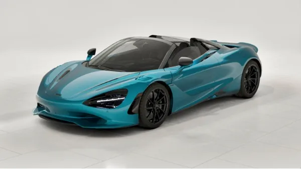
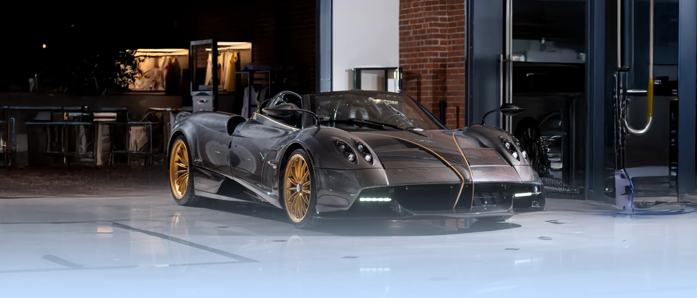
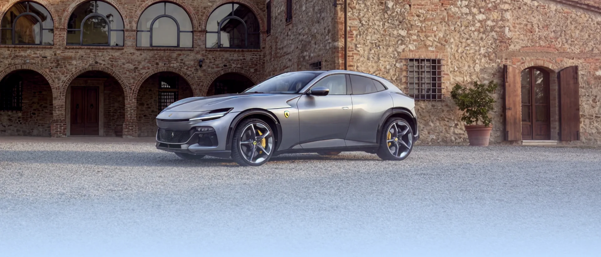
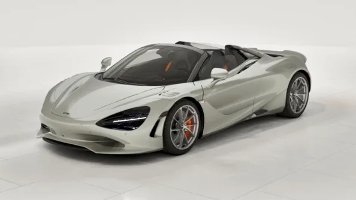
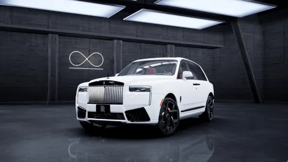

2027 McLaren 750S Spider
$461,010
+ $799 conveyance · $461,809 total
25 mi · Stock MC707
EnquireIn stock today
One Bugatti. One Pininfarina. Three Pagani. And three hundred and twenty-two other reasons to drive to Greenwich.
The roster
Every franchise Miller holds, ordered by what is actually on the floor — not alphabetically, and not by how large the sign is.


Also represented · Czinger · Koenigsegg · McMurtry · Rimac · Superformance
326 cars across two showrooms
New arrivals

$461,010
+ $799 conveyance · $461,809 total
25 mi · Stock MC707
Enquire
$433,250
+ $799 conveyance · $434,049 total
25 mi · Stock 010579
Enquire$576,350
+ $799 conveyance · $577,149 total
25 mi · Stock R818
Enquire
$588,050
+ $799 conveyance · $588,849 total
25 mi · Stock H6‑1040097
EnquireSell or consign
Miller understands that selling a luxury or exotic vehicle requires a refined approach. As curators of the world's most prestigious automobiles, we offer a seamless, discreet and highly professional consignment service.

Since 1976
Iconic brands, unmatched experience and a commitment to excellence since 1976. Whether you are buying a specialty motorcar or entrusting us with servicing one you already own, the team is the same one that has been on West Putnam Avenue for five decades.
Visit